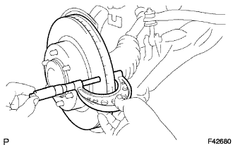

ПЕРЕДНИЙ ТОРМОЗ > ПРОВЕРКА |
| 1. ПРОВЕРЬТЕ ТОРМОЗНОЙ ЦИЛИНДР И ПОРШЕНЬ |
Убедитесь в отсутствии ржавчины и задиров в отверстии цилиндра и на поршне.
При необходимости замените колесный тормозной цилиндр дискового тормоза в сборе.
| 2. ПРОВЕРЬТЕ ТОЛЩИНУ ФРИКЦИОННОЙ НАКЛАДКИ ТОРМОЗНОЙ КОЛОДКИ |
С помощью линейки измерьте толщину фрикционной накладки тормозной колодки.
| 3. ПРОВЕРЬТЕ ВИБРОГАСЯЩУЮ ПРУЖИНУ КОЛОДОК ПЕРЕДНЕГО ДИСКОВОГО ТОРМОЗА |
С помощью средства для очистки тормозов очистите виброгасящую пружину колодок переднего дискового тормоза. Удостоверьтесь в отсутствии деформации и трещин.
При установке виброгасящей пружины колодок переднего дискового тормоза на суппорт переднего дискового тормоза удостоверьтесь, что усилие пружины прикладывается к штифту с отверстием и тормозной колодке дискового тормоза.
| 4. ПРОВЕРЬТЕ ТОЛЩИНУ ДИСКА |
|  |
С помощью микрометра измерьте толщину диска.
| 5. ПРОВЕРЬТЕ БИЕНИЕ ДИСКА |
 |
Установите диск и закрепите 6 гайками ступицы.
С помощью индикатора часового типа измерьте биение диска на расстоянии 10 мм (0,394 дюйма) от внешней кромки диска.
Отверните 6 гаек ступицы и снимите передний диск.